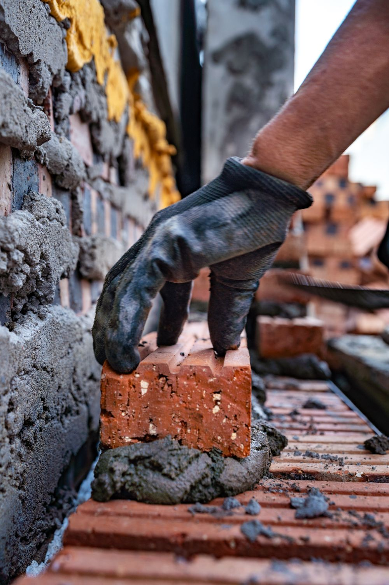
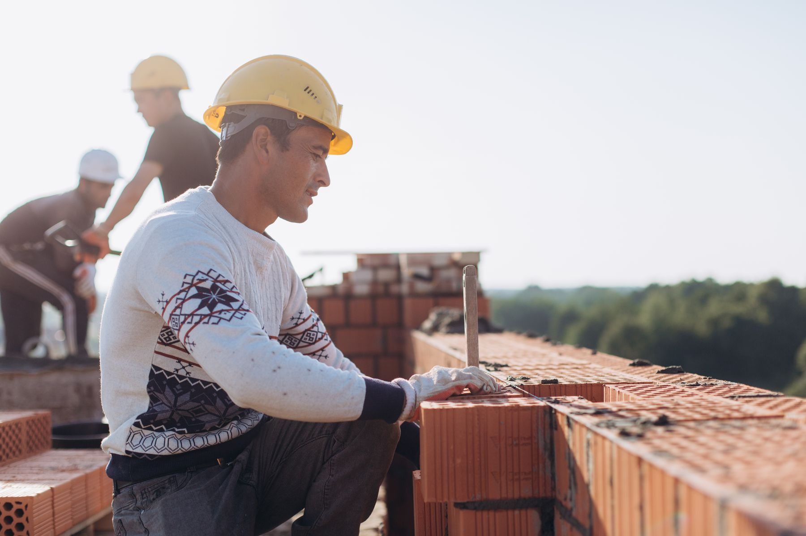
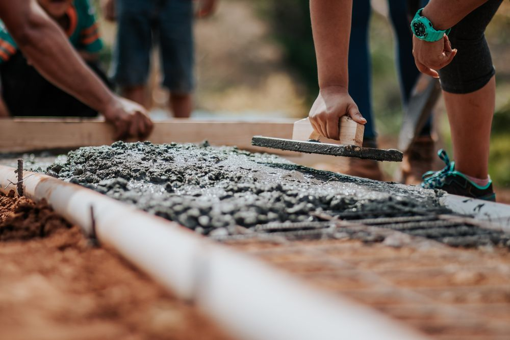
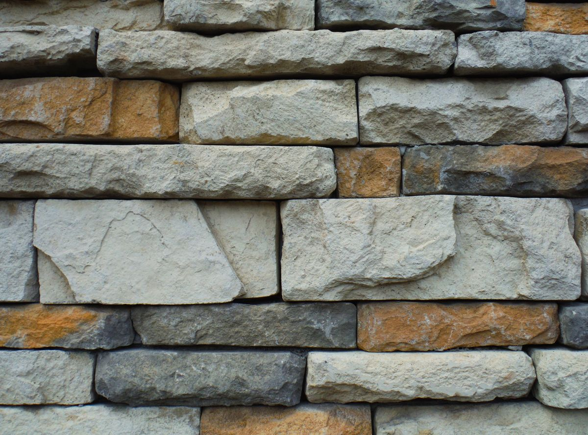
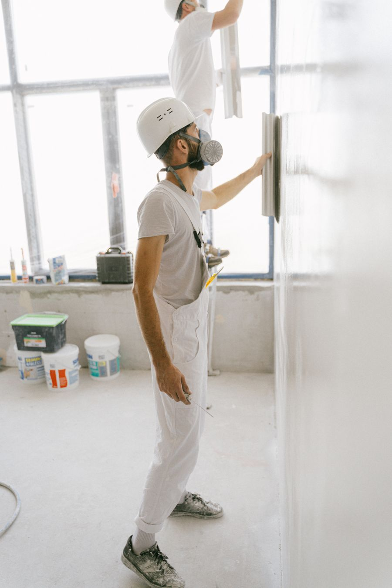
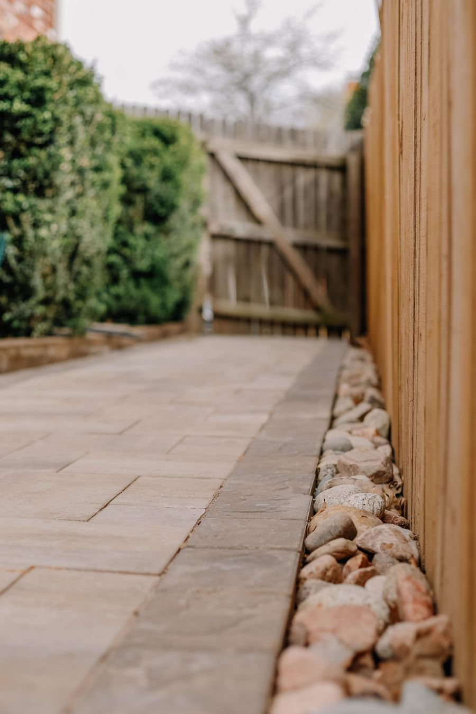
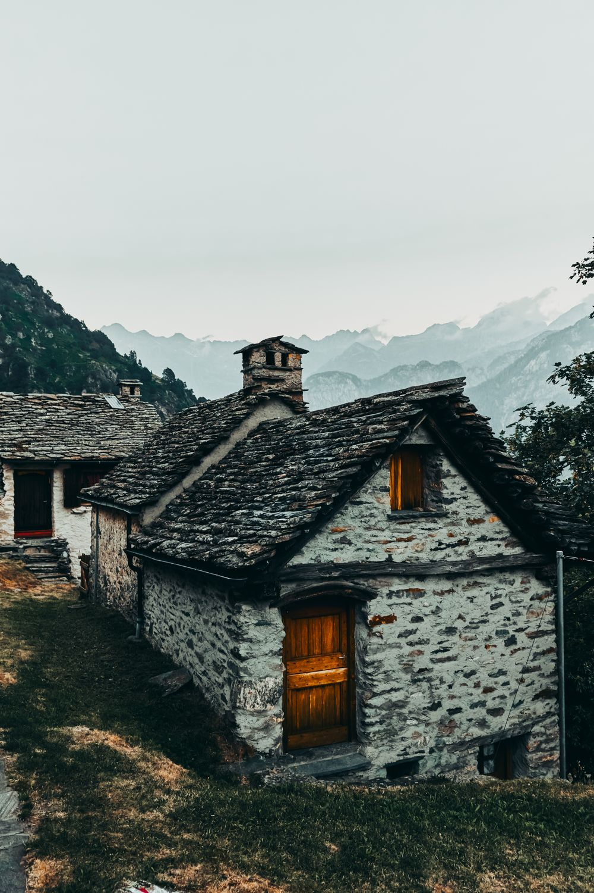
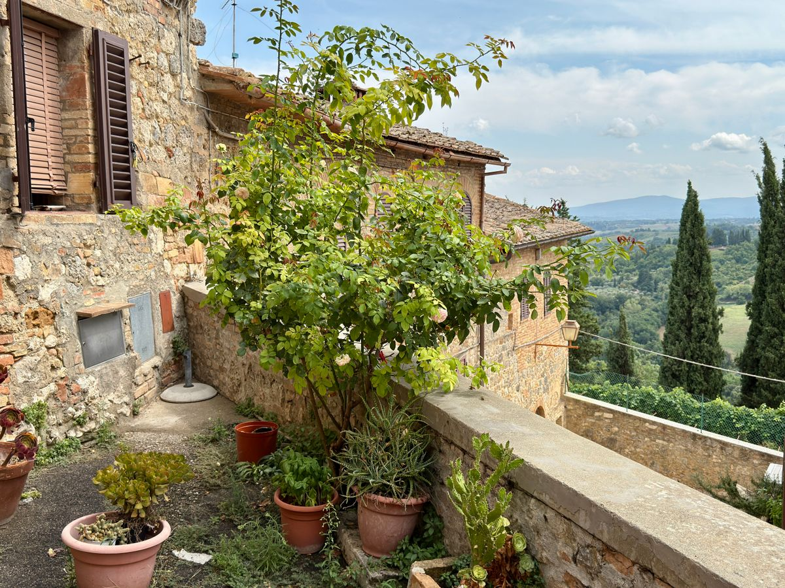
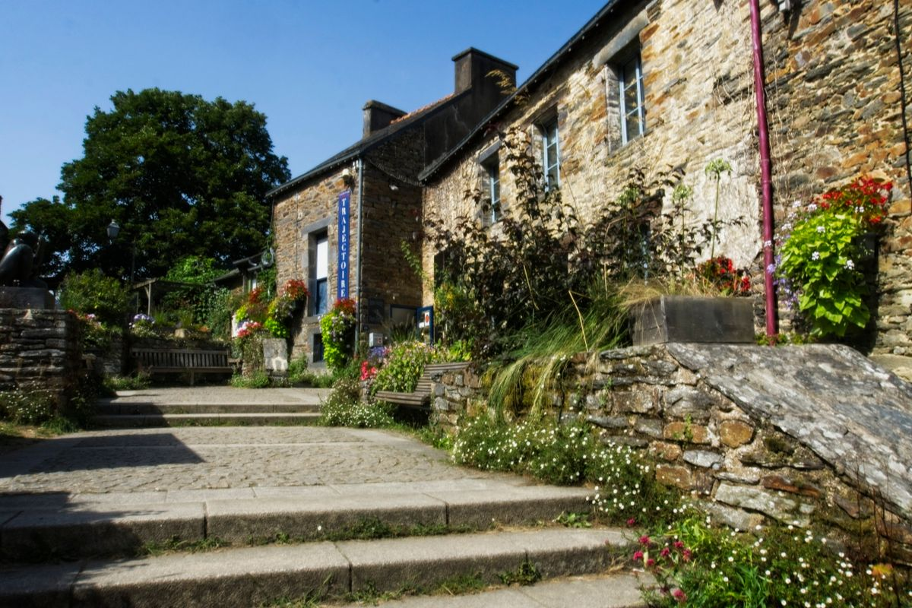
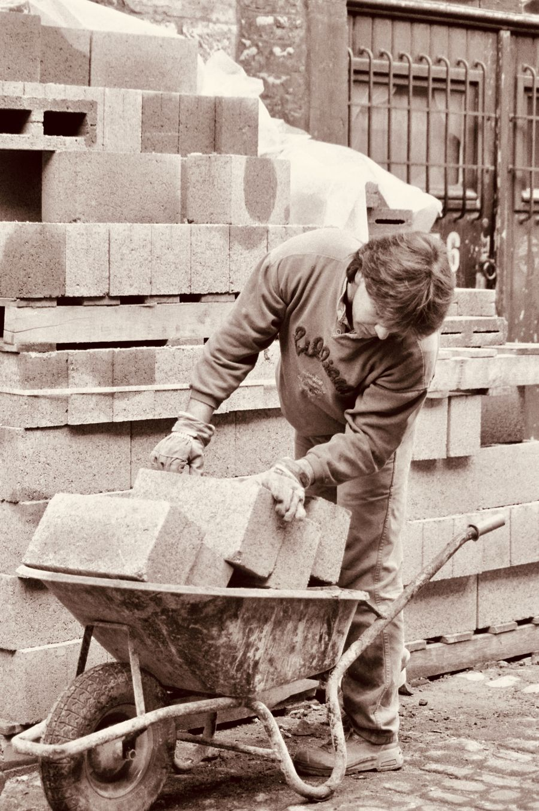

Gros œuvre et extensions
Agrandissement, garage, surélévation, murs porteurs. Nous montons en brique, parpaing ou bloc béton selon votre projet et le PLU de votre commune.
Maçon en Saône-et-Loire
Construction, rénovation et extérieurs pour les particuliers. Une entreprise familiale de six compagnons, qui travaille autour de Mâcon depuis trente ans.

Chaque poste est chiffré ligne par ligne : quantités, matériaux, main-d'œuvre. Pas de « forfait divers ».
La date de démarrage est écrite sur le devis signé. Si un imprévu la décale, vous êtes prévenu par téléphone, pas par silence.
Bâches, accès protégés, gravats évacués. Le soir, on laisse votre jardin dans l'état où on aimerait trouver le nôtre.
Celui qui vient chiffrer est celui qui suit le chantier. Vous avez son numéro direct, du premier rendez-vous à la réception.
Nos travaux
Nous intervenons sur les petits chantiers comme sur les gros. Un rejointoiement de façade mérite le même soin qu'un agrandissement.

Agrandissement, garage, surélévation, murs porteurs. Nous montons en brique, parpaing ou bloc béton selon votre projet et le PLU de votre commune.

Terrassement, semelles, dalle de garage ou d'abri, chape avant carrelage. Le béton est dosé et ferraillé selon l'usage, pas à l'œil.
Création ou agrandissement de baie, pose de linteau, ouverture entre deux pièces. Étaiement et calcul de la reprise compris dans le devis.

Rejointoiement à la chaux, reprise de murs anciens, restauration de maisons de pays mâconnaises. Nous respectons les matériaux d'origine.

Enduit monocouche, enduit à la chaux, ravalement et traitement des fissures. Nous vous montrons les teintes sur échantillon avant de commencer.

Murets, piliers de portail, murs de soutènement, terrasses et allées en pierre ou en pavés. Les finitions qui changent l'allure d'une maison.
Comment ça se passe
Un rendez-vous chez vous, gratuit et sans engagement, pour mesurer, regarder le terrain et écouter ce que vous voulez.
Sous 5 jours ouvrés, par courrier ou par e-mail. On vous rappelle pour le passer en revue ensemble.
Date de démarrage et durée prévue sont inscrites au devis. Acompte de 30 % seulement à la signature.
Un point chaque semaine avec votre chef de chantier, photos à l'appui si vous n'êtes pas sur place.
On fait le tour des travaux ensemble avant le solde. Vous repartez avec votre attestation de garantie décennale.
Réalisations
Photos prises en fin de chantier, avec l'accord des propriétaires.




L'entreprise
Mon père a créé l'entreprise en 1994, avec une bétonnière et une camionnette. J'ai commencé avec lui comme apprenti à seize ans. Aujourd'hui nous sommes six, tous formés sur nos chantiers, et la plupart sont là depuis plus de dix ans.
On n'a jamais fait de publicité. Presque tout notre travail vient du bouche-à-oreille : un voisin, un beau-frère, un client qui nous rappelle pour sa deuxième maison. C'est la seule réclame qui compte pour nous, et c'est pour ça qu'on soigne chaque chantier.
Julien Ferrand
Gérant, maçon depuis 1998
Avis clients
4,9 sur 5, d'après 112 avis Google
Devis clair, aucun supplément à la fin. Ils ont ouvert notre mur porteur entre cuisine et séjour en quatre jours, et ont tout nettoyé derrière eux. Je les recommande les yeux fermés.
Julien est venu voir notre vieille maison un samedi matin. Il nous a déconseillé un enduit ciment que d'autres voulaient nous vendre, et a fait un travail à la chaux superbe.
Extension de 25 m² livrée à la date prévue. On avait un point chaque vendredi, même quand on était au travail ils nous envoyaient des photos. Rare de nos jours.
Questions fréquentes
Oui. Un pilier de portail, quelques mètres de muret ou une reprise de fissure : nous les intégrons à notre planning entre deux gros chantiers. Le délai est parfois un peu plus long, mais on vous donne une date.
En général entre 4 et 10 semaines selon la saison. Le printemps est la période la plus chargée : si vous avez un projet pour l'été, appelez-nous dès l'hiver.
Rien. La visite et le devis sont gratuits et ne vous engagent à rien, dans notre zone d'intervention.
Nous vous fournissons les plans cotés et le descriptif des travaux pour votre déclaration préalable. Pour un permis de construire, nous travaillons avec deux architectes et un dessinateur du secteur.
30 % d'acompte à la signature, une situation intermédiaire pour les chantiers de plus de trois semaines, et le solde à la réception. Pas de paiement en liquide.
Contact
Remplissez le formulaire ou appelez directement. Nous répondons à chaque demande sous 48 heures, et nous convenons d'une visite si le projet le demande.
03 85 00 00 00Lundi au vendredi, 7h30 – 18h
Laissez un message en dehors de ces heures, on rappelle.